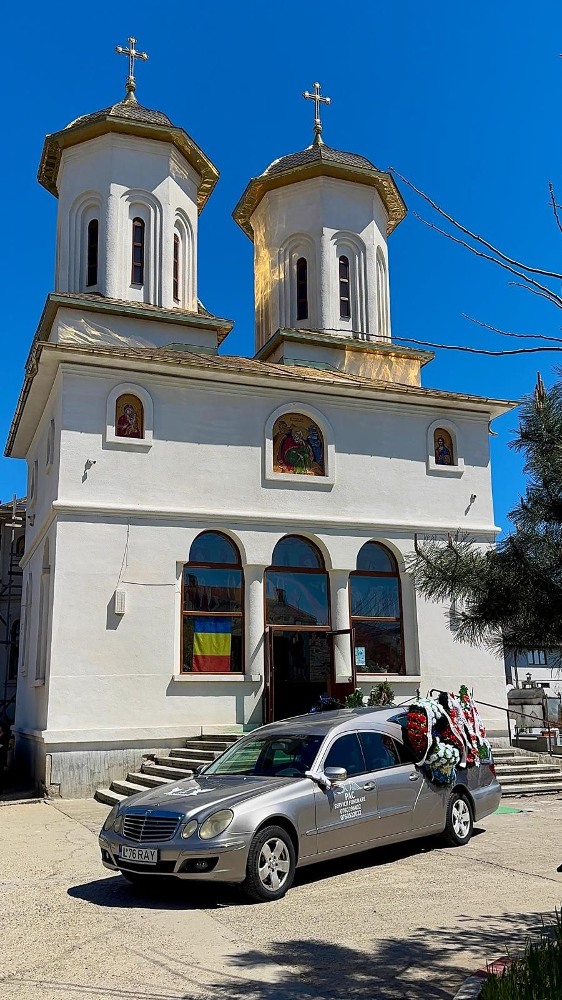

Consultanță și îndrumare
Un sfat limpede, atunci când totul pare copleșitor
Vă explicăm, cu răbdare și pe înțelesul tuturor, ce urmează și în ce ordine. Vă prezentăm variantele și costurile, astfel încât fiecare decizie să fie luată în liniște, fără nicio presiune.
- Disponibili la orice oră, inclusiv noaptea
- Pașii explicați în ordinea lor firească
- Recomandări potrivite familiei și bugetului